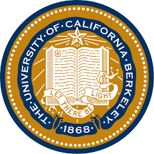
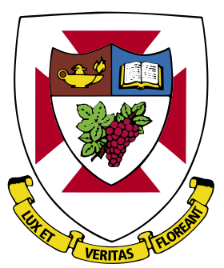
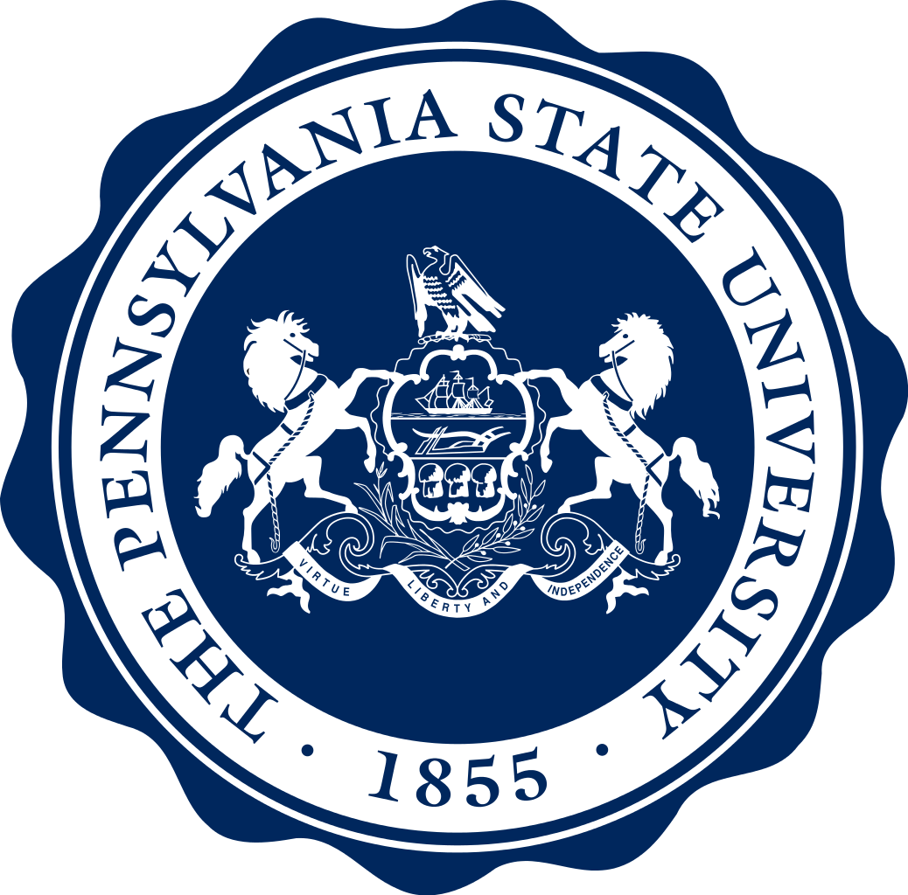

Education
01/2018 – 05/2018 University of California, Berkeley | California, US
|  |
-Visiting Student, Berkeley International Study Program (BISP) |
09/2015 – Present Nanjing University | Nanjing, China
 |
-Undergraduate Student, Geographic Information Science |
Trainings and Workshops
06/2018 Tri-Council Policy Statement: Ethical Conduct for Research Invoving Humans | Winnipeg, Canada
|  |
-Organized by The University of Winnipeg |
06/2018 Summer Camp at Department of Earth System Science in Tsinghua | Beijing, China
|
-Organized by Department of Earth System Science, Tsinghua University |
10/2016 – 11/2017 Undergraduate Resident Training Program | Nanjing, China
|
-Organized by Institute for Advanced Studies in Humanities and Social Sciences, Nanjing University |
10/2017 Global Engaged Humanities Program | Pennsylvania, US
|  |
-Short-term Visiting Student in Pennsylvania State University |
07/2016 – 08/2016 International Summer Camp | Seoul, South Korea
 |
-Short-term Visiting Student in Korea University |
Knowledge and Skills
Software:ArcGIS; Google Earth Engine; ENVI; MATLAB; N-Vivo; GitHub; Co-laboratory
Programming:C; C++; Python: GeoPandas, NumPy; SQL; C#; HTML
Academic Writing:APA, MLA, Experience on writing annotated bibliography and journal articles
Language:Chinese (native), English (fluent), TOFEL Score: 104/120 (Reading: 28, Listening: 26, Speaking: 23, Writing: 27)
Research Ethics:Certificate of Completion on TCPS 2: CORE